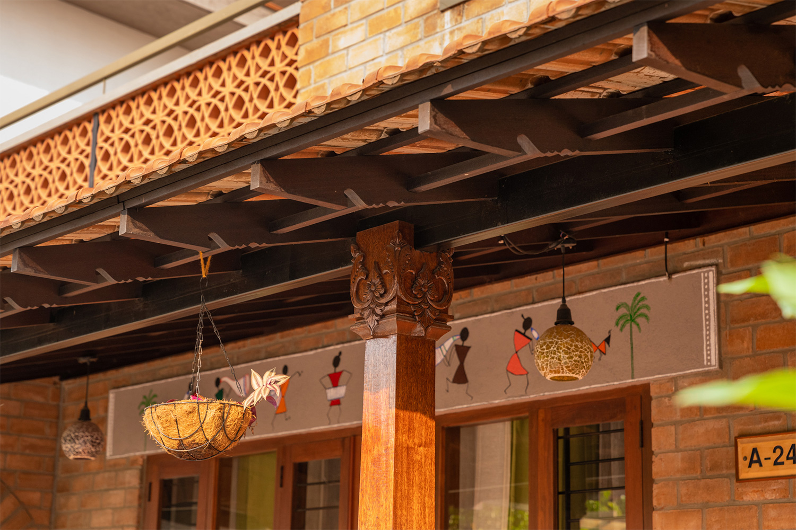
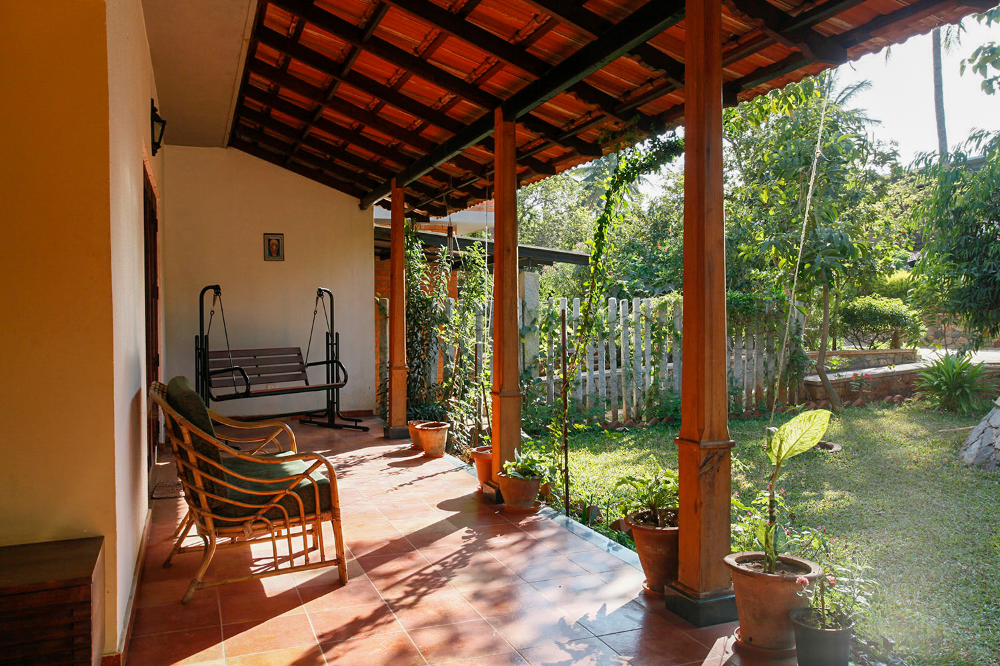
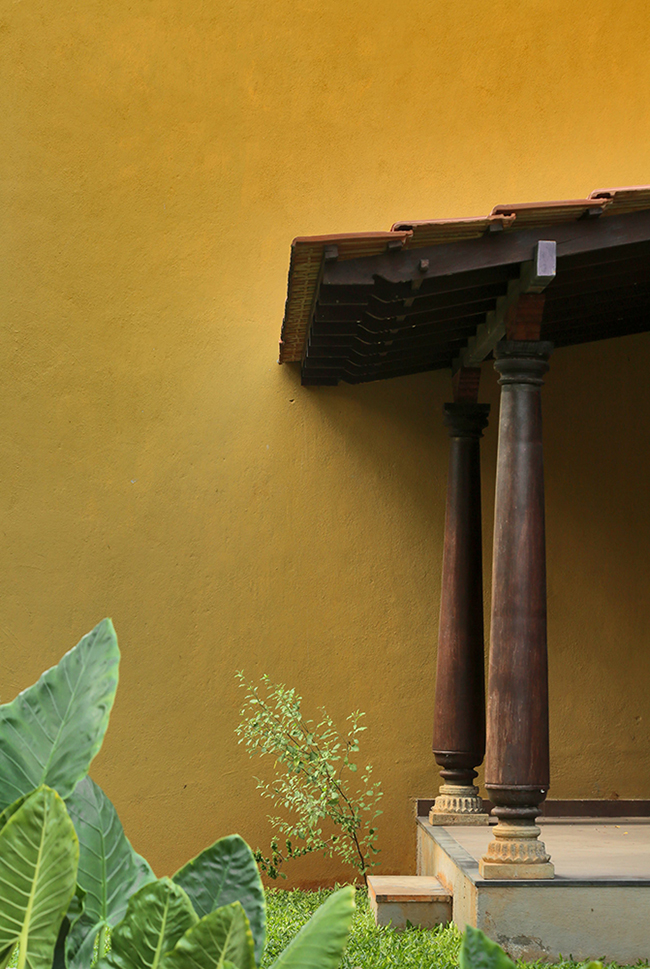
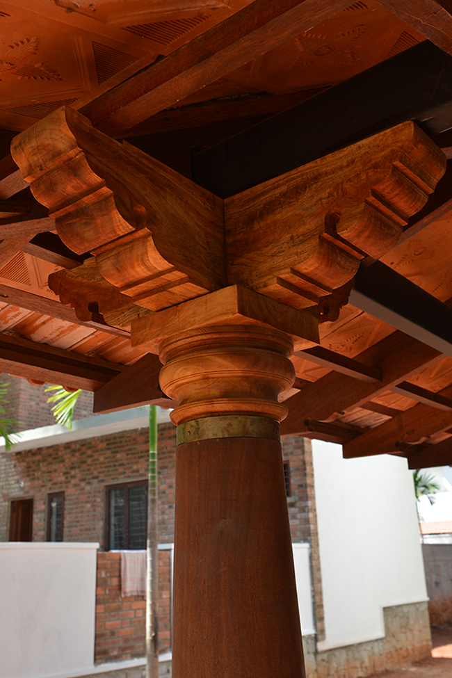
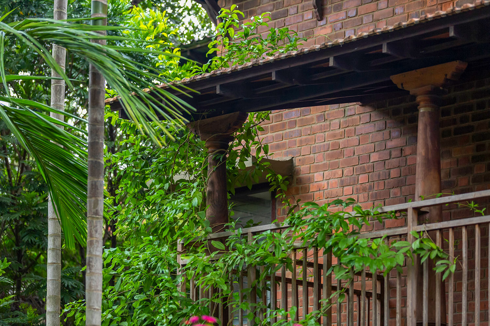
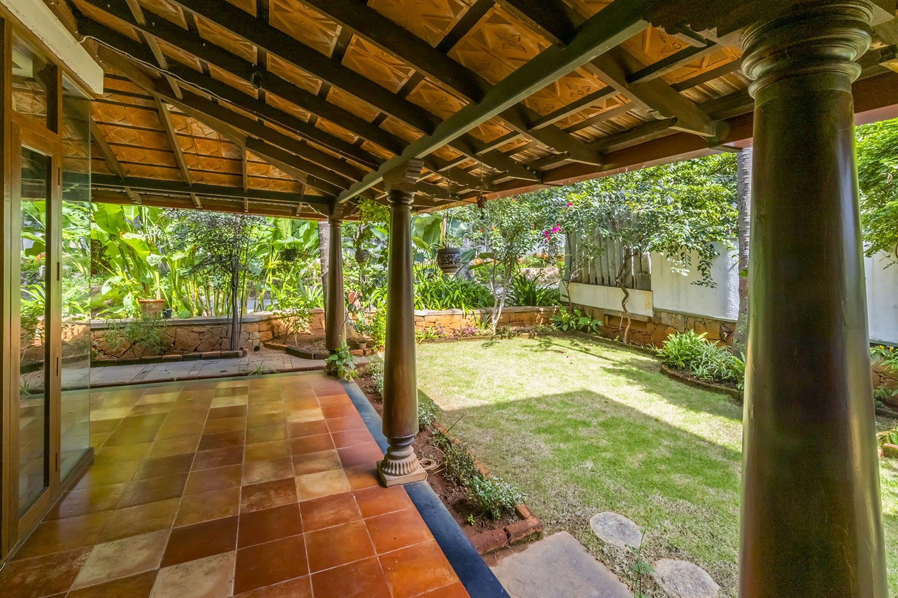
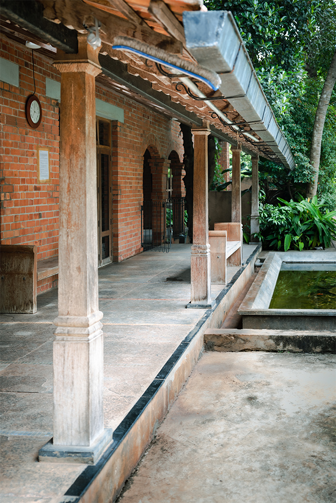
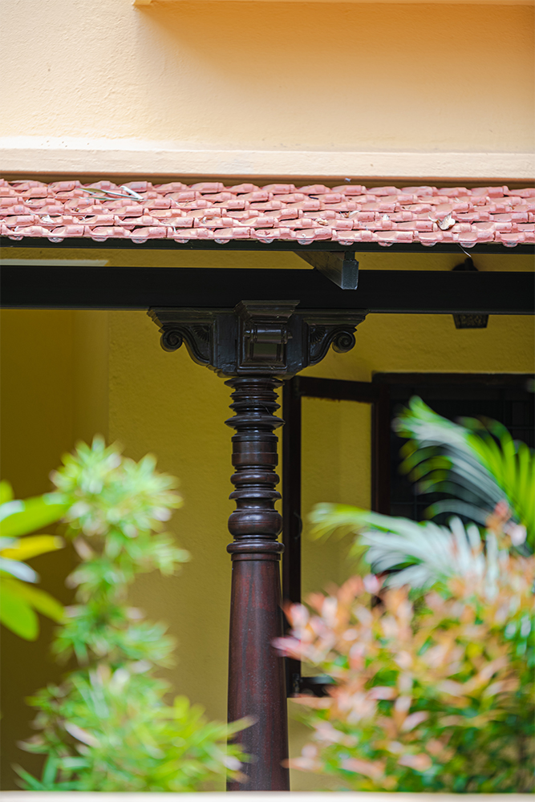

Materials
Materials
This article is a clone from the original GoodEarth Connect catalog. View the original post at:
Boundless Expressions - Series 1 : Carpentry | Chapter 1 : The Pillars of Good Earth ↗
Boundless Expressions
Series 1 – Carpentry
Boundless Expressions
Series 1 – Carpentry
Kavya Bhat – September 23, 2022
Introduction
The title of “Master Craftsman” in India was that of a carpenter in many traditional societies owing to the highly specialised craft’s requirement of rigour and skill. Specifically in Kerala, ‘Tachu-shastra’ or the science of carpentry, was deeply valued. The spaces, proportions, and details were designed in response to the property of the timber used. Even today, the ancient temples and Nalukettu houses are a testament to the skilful choices in the selection of the wood, its accurate joinery, and an artful array of delicate carvings.
However, the advent of the industrial revolution and the misinterpretation of architecture in building something modern and unique led to the steady decline of the limitless usage of this living material.
Utilising this vernacular knowledge built upon the know-how of previous generations that is rampantly dying and metamorphosing into the architecture of the present, we take a look at a few of the crucial timber elements crystallised at Good Earth and how this sustainable material adds value to the design narrative.

Chapter 1 : The Pillars of Good Earth
Pillars are a notable feature in an elevation and contribute immensely to the external aesthetics of the building. Traditionally, the wooden columns used in Chettinad houses or the Nalukettu houses were bulky as they were the primary structural members to carry and transfer the load of a building. Mitigating the same, Good Earth uses the strength of new materials such as steel beams in the sloping roof of the semi-shaded areas to carry a majority of the load, flanking the sides with solid wooden pillars, proportional to the load transfer required. This composite usage helps create a sense of continuity in the design narrative, juxtaposing tradition with modernity while retaining the design roots and character.

Gallery Image

Gallery Image

Gallery Image
Inspired from the old, and re-designed for the present, these pillars show the transition from the bulky pillars to the slender wooden columns that are practical and sustainable.
An array of designs
Every house at Good Earth (over 700) along its expansive 60 acres exhibits a variety of pillars, with its myriad of colours, textures, and designs. From a vantage point, when one looks at the elevation of the community, these repeated elements singularly become a harmonious narrative unifying all the residences. However, when observed more closely, we tend to identify the unique design structure distinctive to each house.
Moreover, semi-open spaces play a significant role in defining one’s experience with nature. Apart from marking the divide between the outside and the inside, these pillars frame the outdoors. When adorned with solid wooden pillars, it creates an experience of its own for the residents adding the old-world charm and warmth while basking in the openness. Thus, an open verandah, internal courtyard, or a balcony flanked by traditional wooden pillars acts as a delightful pocket where one can feel rejuvenated to work or relax.

Material
A solid 8×8 member of Nandi wood, also known as country wood, is used for the pillars. “When designing a large community like ours, sourcing country wood for the pillars was an obvious choice for two reasons. First and foremost, it creates large-scale employment opportunities for farmers and craftsmen at the grassroots, thus enabling the agroforestry of the country. Secondly, Nandi wood is an immensely durable material. Being native to the country, it has the ability to withstand the climatic conditions of the place and can sustain its strength even for over two hundred years when used in semi-shaded areas,” explains Biju P, the Project Director and Head of Carpentry at Good Earth.

The process
Further on, describing the working process at GoodEarth, he elucidates, “Our carpentry team works hand-in-hand with the designers. It is a collaborative practice where the carpenter comes up with the best techniques and options to materialise the architect’s vision. Irrespective of their experience, we train all the carpenters with the specificities of our detailing and techniques to maintain the quality and standard of our work.”

Gallery Image

Gallery Image
Maintenance
When used externally, the pillars might fade due to weather conditions or develop a hairline crack sometimes. However, the dull appearance cannot be construed as a benchmark for the quality of the wood. All it takes is a quick re-polish with cashew oil (a natural oil effective in absorbing moisture) to restore the glossy look and strength. By taking the control of annual maintenance, the process is continuous, where one periodically checks, cares, and maintains the living material as it ought to.